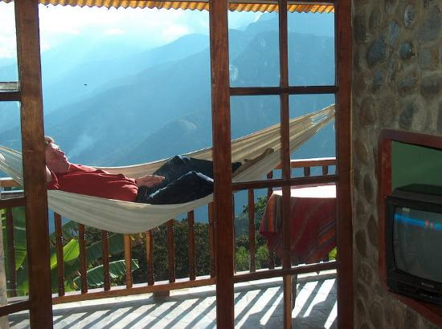
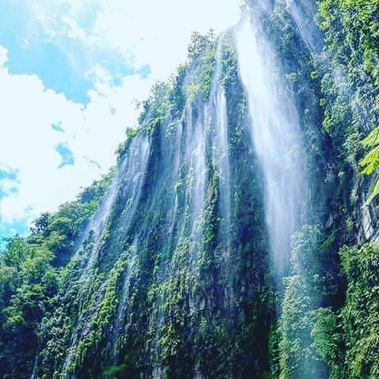
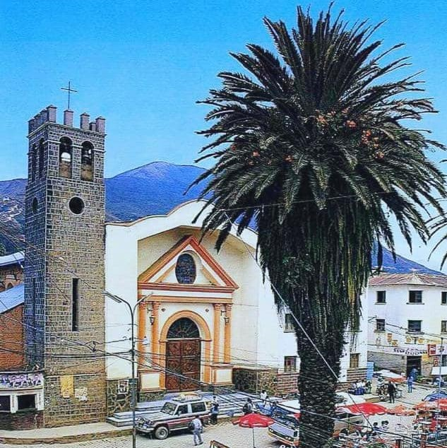
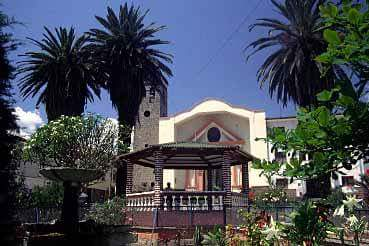
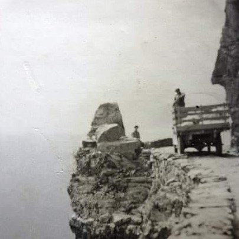
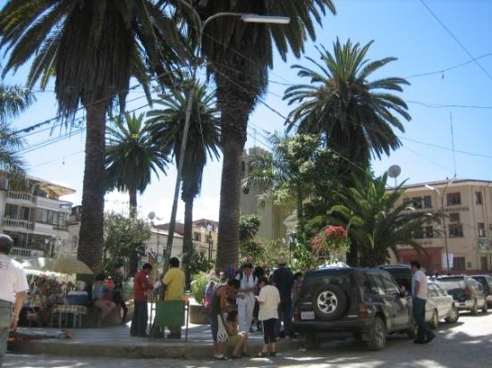

COROICO
Estas son las dos culturas que se alojaron en la localidad de los yungas, los afrobolivianos y los aymaras, los aymaras que adoptaron otro tipo de vestimenta llegándose a denominar aymaras yungueños y por otro lado los afrobolivianos se establecieron en los yungas luego de que lograron escapar del esclavismo español.
Población
Clima Promedio
Altitud
Vive esta experiencia unica